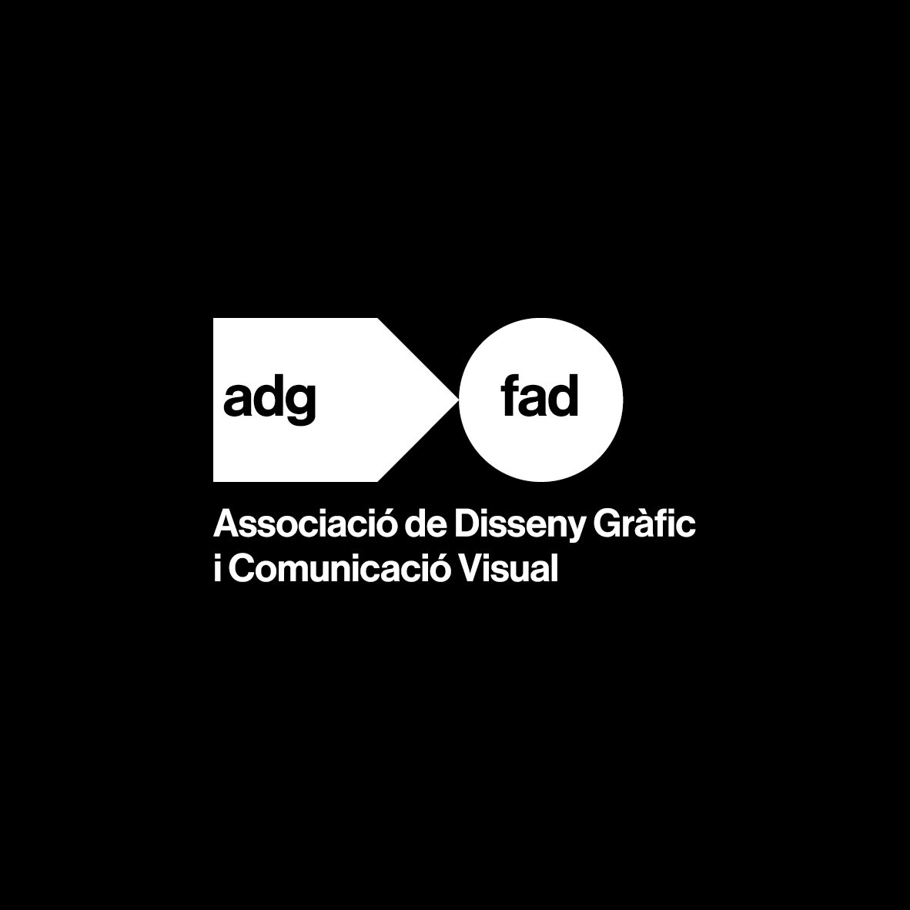

El Observatorio de Licitaciones Públicas ADG-FAD es una iniciativa sin ánimo de lucro que centraliza y clasifica las convocatorias de contratación pública relacionadas con el diseño gráfico y la comunicación visual en España.
Su objetivo es hacer accesible a los profesionales del diseño una información que, aunque pública, está dispersa en decenas de plataformas autonómicas y estatales.
Un script Python (fetch_licitaciones.py) descarga periódicamente los datos de los ZIPs de PLACSP, los filtra por relevancia para el sector del diseño y genera un fichero data.json que alimenta esta interfaz.
El filtrado se basa en palabras clave, códigos CPV y un sistema de puntuación de relevancia. Solo se muestran licitaciones con puntuación ≥ 20.
Todo el código es open source — puedes contribuir, hacer fork o desplegar tu propia versión desde GitHub ↗.
PLACSP — Plataforma de Contratación del Sector Público (contrataciondelestado.es). Datos en formato ATOM (XML) distribuidos en ficheros ZIP mensuales.
Las plataformas autonómicas (Gencat, Euskadi, etc.) publican sus datos en PLACSP mediante integración automática.
Los datos son siempre información pública — no se realiza ningún scraping de pantallas ni se vulneran términos de servicio.
Las licitaciones públicas son una oportunidad real para estudios y profesionales del diseño. Sin embargo, su complejidad administrativa desalienta a muchos. Esta guía recoge lo esencial que necesitas saber.